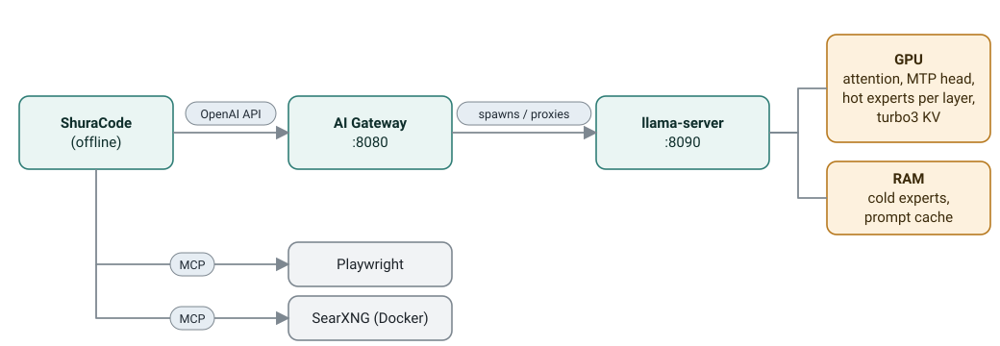

Problem
Strong coding models do not fit in 12 GB of VRAM, and when they do, the desktop starts to stutter.
What I built
An OpenAI-compatible gateway in Python that loads the model on demand, survives crashes and saves long sessions. My own llama.cpp fork in C++ with an expert cache and a VRAM governor. A harness of 111 agentic coding tasks.
Result
38–39 tok/s at 187k context with the browser and IDE open. A 100k-token session restores in 0.5 s instead of 156 s. 580+ tests, CI on Linux, macOS and Windows.
Python · C++ · llama.cpp · CUDA / ROCm · MCP · Docker